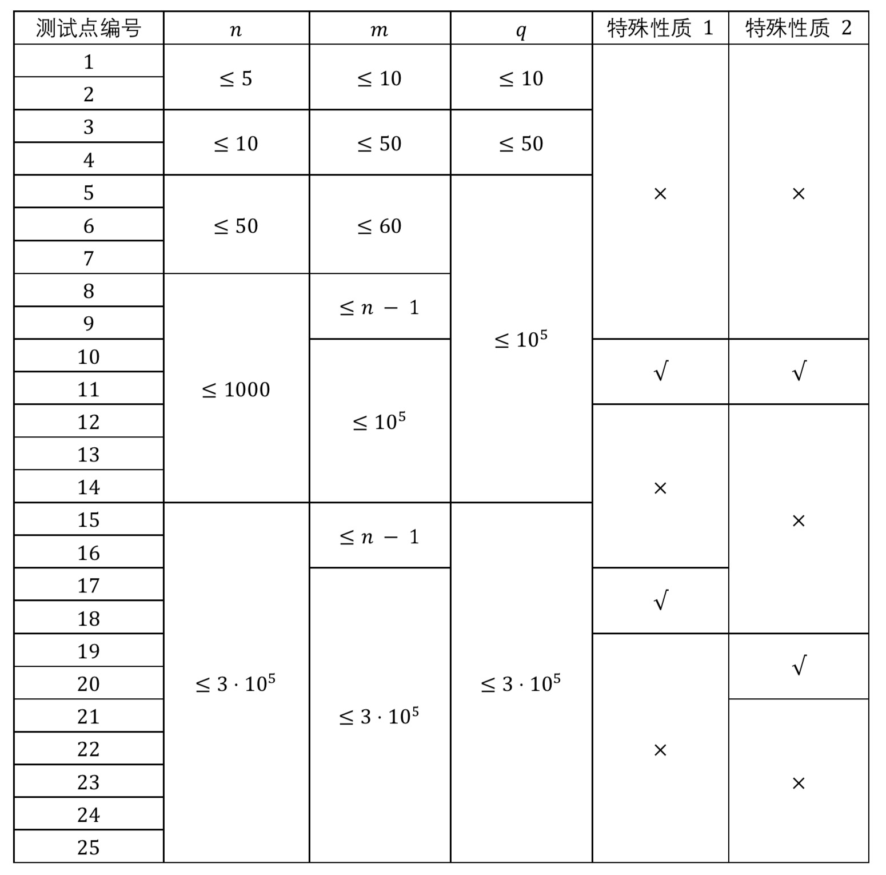

※ 下发文件链接 （有更新）密码：wzayqj ，本题英文名为 $\texttt{evil}$ ，不需要 freopen 。
※ 备用文件链接 无需密码点击即可下载，本题英文名为 $\texttt{evil}$ 。
※ 跳过剧情的同学请从分割线开始看哦~
午后三点，稀疏的钟声带来了属于魔法少女们的下午茶时间。此时的 ω 沉浸在欢声笑语中，丝毫不知一场改变她命运的灾厄即将到来。
「ω ！ω ！我总算学会那个烦人的『火球术』了！」
「ε ，这种危险的法术不是严禁在法术屏障之外施放了吗？你……」
被称作 ε 的少女一副茫然无辜的样子：「什么啊？我只是过来跟你报个喜而已，又没放，倒是 ω 你是不是眼睛出了什么问题啊？」
「可远处的那个火球……」ω 说着向天边指去，似乎意识到了什么，脸色大变，「不对，为什么它离我们更近了……而且好像不是一个，而是一群？！」
ε 和 ω 四目相对：「莫非 Ω 老师口中常提的那个大魔王 Ψ ，这么早就来惹事了吗？」
Ω 和其他导师早已通过传送门落荒而逃，然而魔法少女们赶到时，传送门已经毁坏了。「真是见鬼……」 ω 心想，「看来只能靠自己了。」
魔法学院有 $n$ 处编号从 $1$ 到 $n$ 的地点和 $m$ 条双向道路，第 $i$ 条道路连接 $u_i$ 号地点和 $v_i$ 号地点。
为了方便学生游览各处，从任一地点出发都能通过若干条道路到达其他地点。
铺天盖地的火球砸了下来，使得道路变得寸步难行，现在通过第 $i$ 条道路所需的时间是 $2^i$ 。
ω 有 $q$ 个同伴，她为同伴们分别设定了逃离计划。第 $i$ 个同伴当前在 $s_i$ 号地点，按照计划，她应逃离到 $t_i$ 号地点。
ω 想知道，每个同伴分别最少需要多少时间才能逃离？情况紧急，你只要告诉她答案对 $998244353$ 取模的结果。
第一行，包含两个整数 $n,\,m$ ，分别为魔法学院地点和道路的数量。
接下来 $m$ 行，其中第 $i$ 行包含两个正整数 $u_i,\,v_i$ ，表示第 $i$ 条道路连接 $u_i$ 号地点和 $v_i$ 号地点。
第 $m + 2$ 行，包含一个整数 $q$ ，为同伴的个数。
接下来 $q$ 行，其中第 $i$ 行包含两个正整数 $s_i,\,t_i$ ，表示第 $i$ 个同伴从 $s_i$ 号地点逃离到 $t_i$ 号地点。
共 $q$ 行，第 $i$ 行输出一个整数，表示第 $i$ 个同伴逃离需要的最小时间对 $998244353$ 取模的结果。
4 5 1 2 1 3 1 4 2 4 3 4 2 1 4 2 3
8 6
见下发文件中 evil2.in
见下发文件中 evil2.ans

对于具有 特殊性质 1 的数据，有 $\left|u_i-v_i\right|=1$ 。
对于具有 特殊性质 2 的数据，有 $t_1=t_2=\cdots{=\ t}_q$ 。
对于所有的数据，有 $1 \le u_i ,\, v_i ,\, s_i ,\, t_i \le n \le 3 \cdot 10^5 ,\ 0 \le m ,\, q \le 3 \cdot 10^5 ,\ u_i \neq v_i$ 。
 Comet OJ
Comet OJ